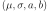

GammaFactory¶
(Source code, png, hires.png, pdf)
{kind=link}
{kind=link}
-
class
GammaFactory(*args)¶ Gamma factory.
- Available constructor:
- GammaFactory()
The parameters are estimated by maximum likelihood:
See also
Methods
build(*args)Build the distribution. buildAsGamma(*args)buildEstimator(*args)Build the distribution and the parameter distribution. getBootstrapSize()Accessor to the bootstrap size. getClassName()Accessor to the object’s name. getId()Accessor to the object’s id. getName()Accessor to the object’s name. getShadowedId()Accessor to the object’s shadowed id. getVisibility()Accessor to the object’s visibility state. hasName()Test if the object is named. hasVisibleName()Test if the object has a distinguishable name. setBootstrapSize(bootstrapSize)Accessor to the bootstrap size. setName(name)Accessor to the object’s name. setShadowedId(id)Accessor to the object’s shadowed id. setVisibility(visible)Accessor to the object’s visibility state. -
__init__(*args)¶ x.__init__(…) initializes x; see help(type(x)) for signature
-
build(*args)¶ Build the distribution.
Available usages:
build(sample)
build(param)
Parameters: sample : 2-d sequence of float
Sample from which the distribution parameters are estimated.
param : Collection of
PointWithDescriptionA vector of parameters of the distribution.
Returns: dist :
DistributionThe built distribution.
-
buildEstimator(*args)¶ Build the distribution and the parameter distribution.
Parameters: sample : 2-d sequence of float
Sample from which the distribution parameters are estimated.
parameters :
DistributionParametersOptional, the parametrization.
Returns: resDist :
DistributionFactoryResultThe results.
Notes
According to the way the native parameters of the distribution are estimated, the parameters distribution differs:
- Moments method: the asymptotic parameters distribution is normal and estimated by Bootstrap on the initial data;
- Maximum likelihood method with a regular model: the asymptotic parameters distribution is normal and its covariance matrix is the inverse Fisher information matrix;
- Other methods: the asymptotic parameters distribution is estimated by Bootstrap on the initial data and kernel fitting (see
KernelSmoothing).
If another set of parameters is specified, the native parameters distribution is first estimated and the new distribution is determined from it:
- if the native parameters distribution is normal and the transformation regular at the estimated parameters values: the asymptotic parameters distribution is normal and its covariance matrix determined from the inverse Fisher information matrix of the native parameters and the transformation;
- in the other cases, the asymptotic parameters distribution is estimated by Bootstrap on the initial data and kernel fitting.
Examples
Create a sample from a Beta distribution:
>>> import openturns as ot >>> sample = ot.Beta().getSample(10) >>> ot.ResourceMap.SetAsUnsignedInteger('DistributionFactory-DefaultBootstrapSize', 100)
Fit a Beta distribution in the native parameters and create a
DistributionFactory:>>> fittedRes = ot.BetaFactory().buildEstimator(sample)
Fit a Beta distribution in the alternative parametrization :
>>> fittedRes2 = ot.BetaFactory().buildEstimator(sample, ot.BetaMuSigma())
-
getBootstrapSize()¶ Accessor to the bootstrap size.
Returns: size : integer
Size of the bootstrap.
-
getClassName()¶ Accessor to the object’s name.
Returns: class_name : str
The object class name (object.__class__.__name__).
-
getId()¶ Accessor to the object’s id.
Returns: id : int
Internal unique identifier.
-
getName()¶ Accessor to the object’s name.
Returns: name : str
The name of the object.
-
getShadowedId()¶ Accessor to the object’s shadowed id.
Returns: id : int
Internal unique identifier.
-
getVisibility()¶ Accessor to the object’s visibility state.
Returns: visible : bool
Visibility flag.
-
hasName()¶ Test if the object is named.
Returns: hasName : bool
True if the name is not empty.
-
hasVisibleName()¶ Test if the object has a distinguishable name.
Returns: hasVisibleName : bool
True if the name is not empty and not the default one.
-
setBootstrapSize(bootstrapSize)¶ Accessor to the bootstrap size.
Parameters: size : integer
Size of the bootstrap.
-
setName(name)¶ Accessor to the object’s name.
Parameters: name : str
The name of the object.
-
setShadowedId(id)¶ Accessor to the object’s shadowed id.
Parameters: id : int
Internal unique identifier.
-
setVisibility(visible)¶ Accessor to the object’s visibility state.
Parameters: visible : bool
Visibility flag.